A business with a social purpose: to help trustees and boards develop, diversify and thrive, creating a wider societal flourishing. To do this effectively however, would require a brand and website that was fit for purpose.
The project and business vision was close to my heart: help people and make a difference to society. This visual shows the homepage of their site, a very clear and 'no nonsense' approach; the pattern nods to 'T' & 'U' and the differences in people; the way they see things and the way we weave together relationally to make something beautiful.
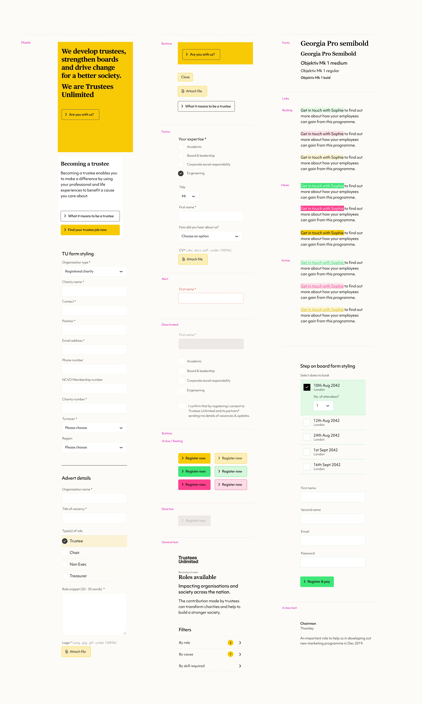
Examples of mobile user interface items from the Trustees Unlimited design style guide. I also produced brand style guidelines for this project too.
Shown here are the straplines I developed for the business that neatly summerise their activities, beliefs and raison d'etre.*
* I must give credit to Anna Corbett for helping with some of the final wording.
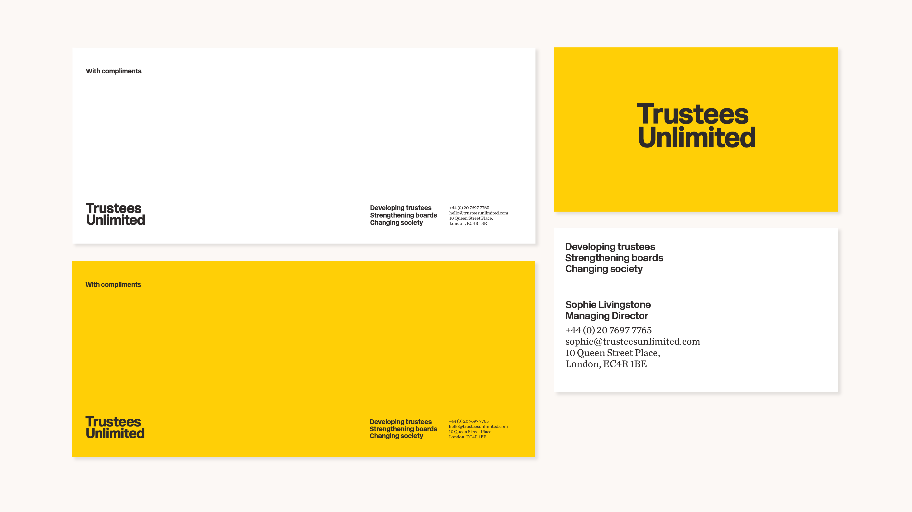
Trustees Unlimited - Compliment slip designs and their business card design.
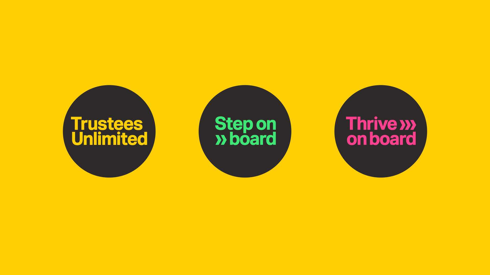
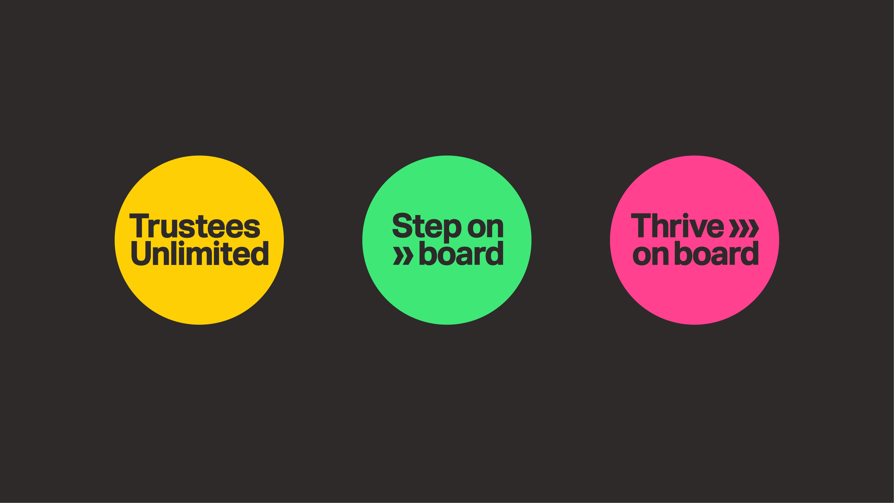
Trustees Unlimited runs programmes for helping trustess: one helps secure positions on boards, the other supports a trustee once they have secured a board position. Both of these programmes needed sub-brands.
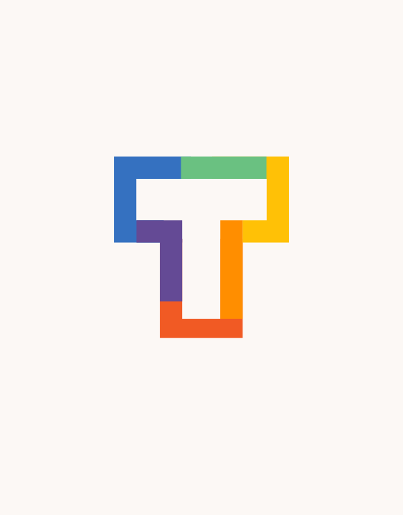
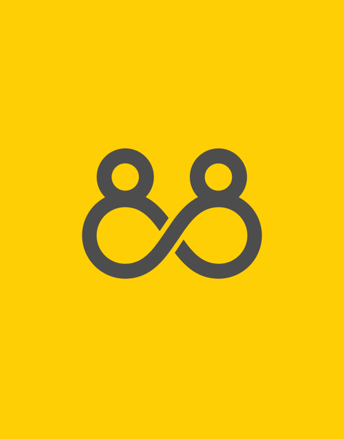
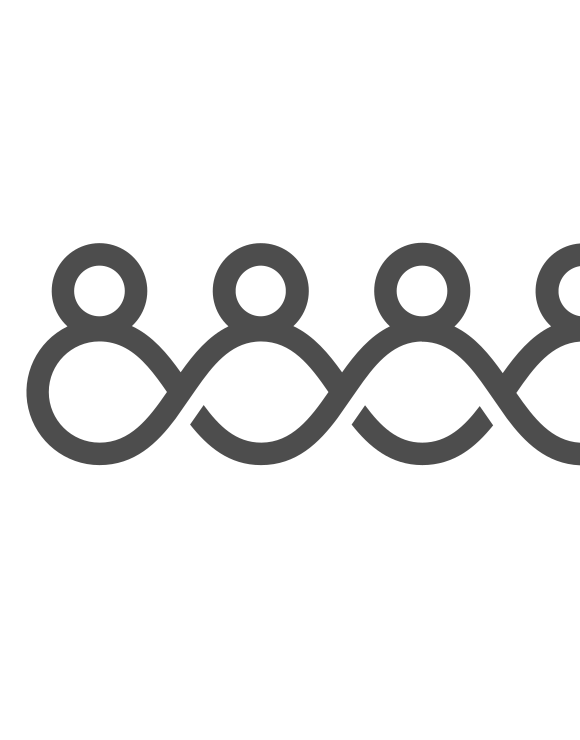
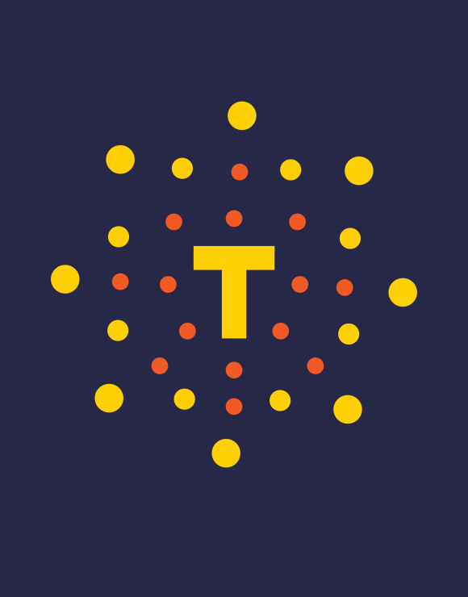
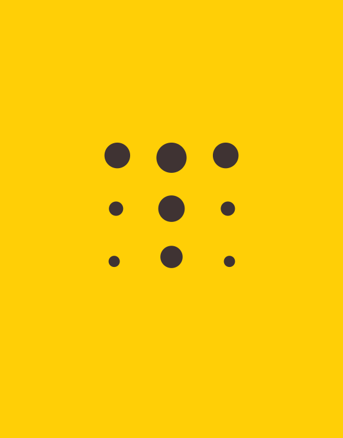
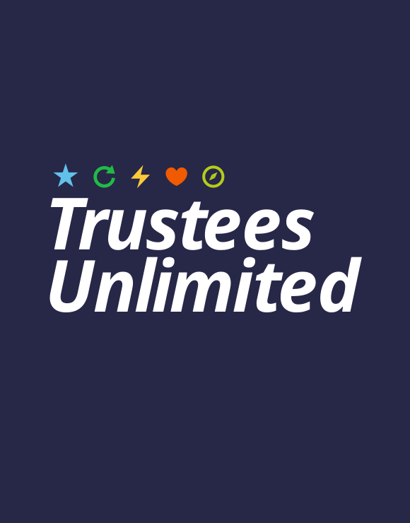
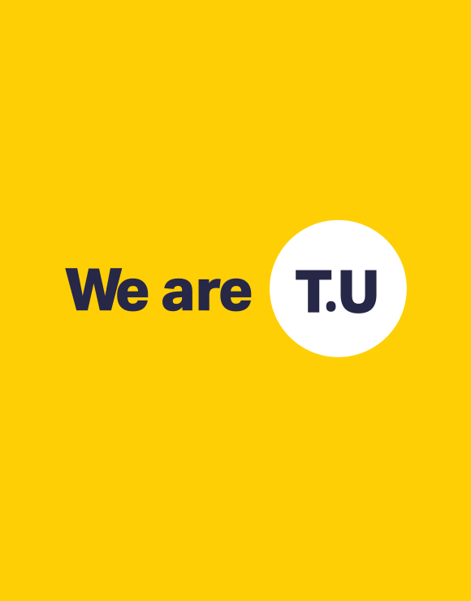
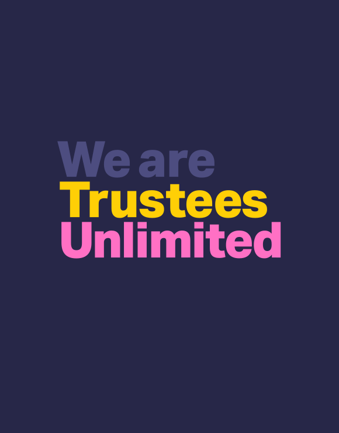
A selection of rejected logos
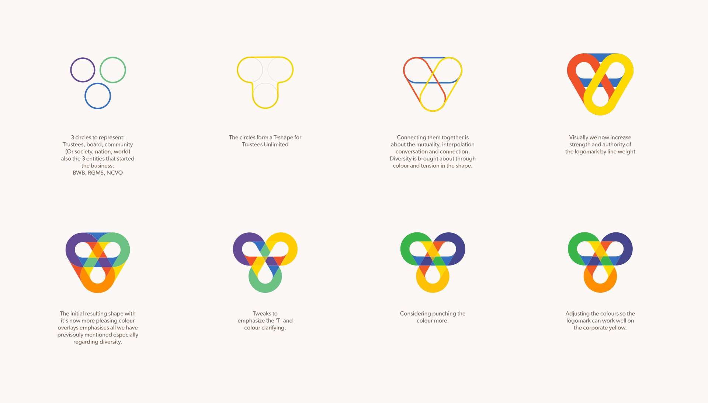
My favourite of the many rejected logos for this project, I loved this logo and felt it worked really well - C'est la vie. The show must go on and the client must be happy!
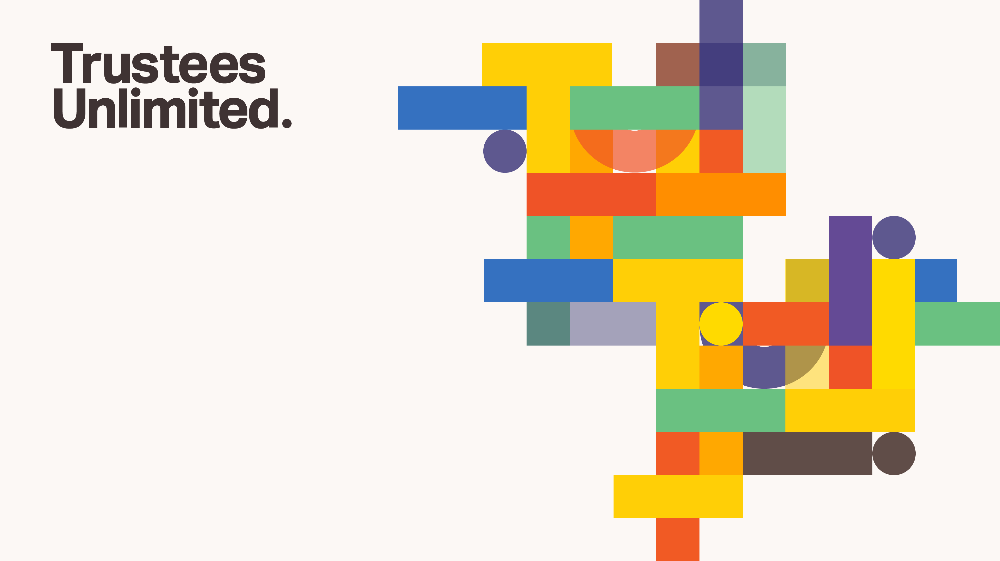
The client rejected this colourful brand concept. I thought it worked well, square pegs in round holes, vibrancy of opinion, overlay and shaping communicating differing experience and backgrounds, coming together in colour to form a beautiful and organised picture. You can see the client retained the pattern
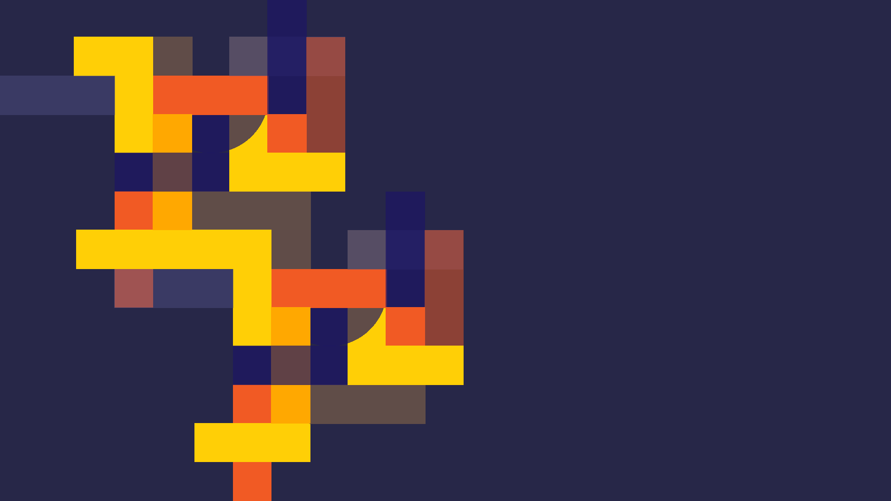
Another rejected pattern concept, I know that showing this is overkill but I just love these colours, rich, deep and layered, great for comunicating interwoven thought and perspective.
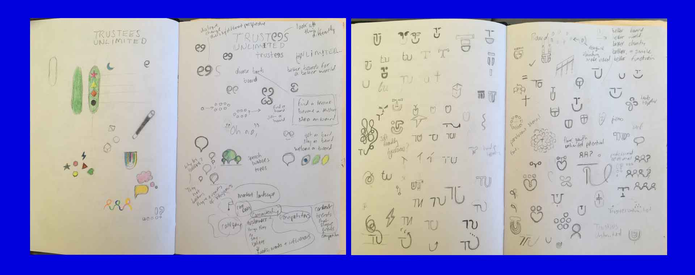
Some initial sketched thoughts, the face from the 'T' and 'U' and the coloured shapes within a pod I liked but unlike Pinocchio, they never came to life.